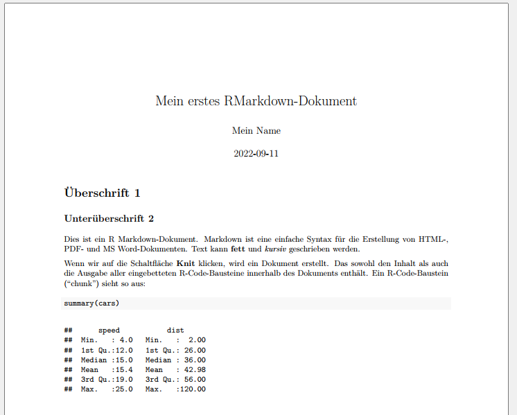

sat_small <- haven::read_dta("./data/BIBBBAuA_2018_suf1.0.dta",n_max = 16) %>%
select(F1450_04,F1450_05,F1450_06) %>%
slice(12:16)
# formula syntax
sat_small %>%
mutate(across(matches("F1450"), ~mean(.x)))
# anonymous function shorthand
sat_small %>%
mutate(across(matches("F1450"), \(x) mean(x) ))Links & Further Reading
%>% vs. |>
In this course, we have used the pipe %>% from {tidyverse} (technically from the {magrittr} package). With the update to R 4.1, a pipe |> was also introduced in base R, and help pages and other resources are slowly but surely replacing %>% with |>. For (almost) all applications we’ve learned, both pipes behave identically. Since older R versions are still installed at the IAB, we have stuck to the ‘old version’. However, there’s nothing wrong with switching to |> after an update—or simply sticking with %>%.

You can find more about the differences here between the two pipes. Additionally, this blog post offers a good overview of the pitfalls when switching from %>% to |>.
Anonymous Functions: .x vs. \(x)
With R 4.1.0, a new ‘anonymous function shorthand’ was introduced in base R, replacing the ‘formula syntax’ notation ~mean(.x) that we learned in Chapter 6. In the new base R, it would be written as \(x) mean(x).
From the {purrr} release notes for version 1.0.0 (December 2022): We believe that it’s better to use these new base tools because they work everywhere: the base pipe doesn’t require that you load magrittr and the new function shorthand works everywhere, not just in purrr functions. Additionally, being able to specify the argument name for the anonymous function can often lead to clearer code.
Accordingly, the application in across() would look like this:
In this script, I have relied on the previous ‘formula syntax’ notation, as most help pages currently still use this syntax.
Introductions to R
A collection of teaching scripts and materials from various contexts for self-learning:
R for Data Science the standard work for data analysis with {tidyverse} - very intuitive introduction, focus on Data Science.
Problem-oriented introductions to specific applications “do more with R”.
Ten simple rules for teaching yourself R.
Modern Data Analysis with R: A German-language introduction to {tidyverse}.
R for the Rest of Us offers many tutorials and free courses, including many YouTube videos.
Stata 2 R is aimed at Stata users who want to switch to R. However, it shows the {data.table} package for data processing instead of {tidyverse}. {data.table} is very fast but has a somewhat more cumbersome syntax compared to {tidyverse}. For those working with very large datasets, it’s worth trying out {data.table}.
RMarkdown
{rmarkdown} allows you to combine formatted text elements with Markdown and R code or output. Unlike an R script, an RMarkdown document contains not only commands but also text that can be formatted using Markdown commands. This way, graphics, tables, etc., can be created directly alongside the accompanying text. With R Markdown, we can create HTML, PDF, Word documents, PowerPoint and HTML presentations, websites, and books. This entire website was created with {R Markdown} or the related package {Quarto}.
The help pages and documentation for R Markdown are extensive, and the tutorials and cheatsheets are excellent. Therefore, here’s just a brief overview.
Markdown Syntax
An RMarkdown document in its basic form looks something like this:
---
title: "My First RMarkdown Document"
author: "My Name"
date: "2022-09-11"
output: pdf_document
---
# Heading 1
## Subheading 2
This is an R Markdown document.
Markdown is a simple syntax for creating HTML, PDF, and MS Word documents.
Text can be **bold** and *italic*.
When we click the **Knit** button, a document is created.
That contains both the content and the output of any embedded R code chunks within the document.
An R code chunk looks like this:
```{r cars}
# this is where the R code goes
summary(mtcars$qsec)
```
Example
Cheatsheets
A collection of cheatsheets for a wide range of applications is available here.
{ggplot2}
A significant strength of ggplot2 is the numerous extensions that allow you to
- Combine multiple plots with
{patchwork}. - Create maps with sf, another link.
- Use advanced text formatting with
{ggtext}. - Create animated graphics with
{gganimate}- an introduction or here. - Insert logos into
{ggplot2}with{ggpath}.
An overview of extension packages for {ggplot2} can be found here.
Also, The R Graph Gallery provides an excellent overview of visualization possibilities with syntax examples for {ggplot2}.
Advanced use of lapply()/map() with custom functions
- Comprehensive introduction to loops with
map()and other functions from{purrr}Hendrik van Broekhuizen. - Model series: Blog by Tim Tiefenbach on elegant possibilities.
regex
For working with text variables, regular expressions (regex) are a great help. They allow you to search for specific character sequences in text sections, replace them, etc. Joshua C. Fjelstul’s blog is a good starting point. There’s also a helpful cheatsheet for regex in R and the regex package {stringr}.
Further Resources
{easystats} offers a collection of packages that make statistical analysis easier and more unified. However, this unification comes with somewhat limited flexibility—it’s a matter of taste and depends on the application. We have used {performance} and {effectsize} from the easystats universe.
Event History Models / Event History Modeling / Survival Analysis.